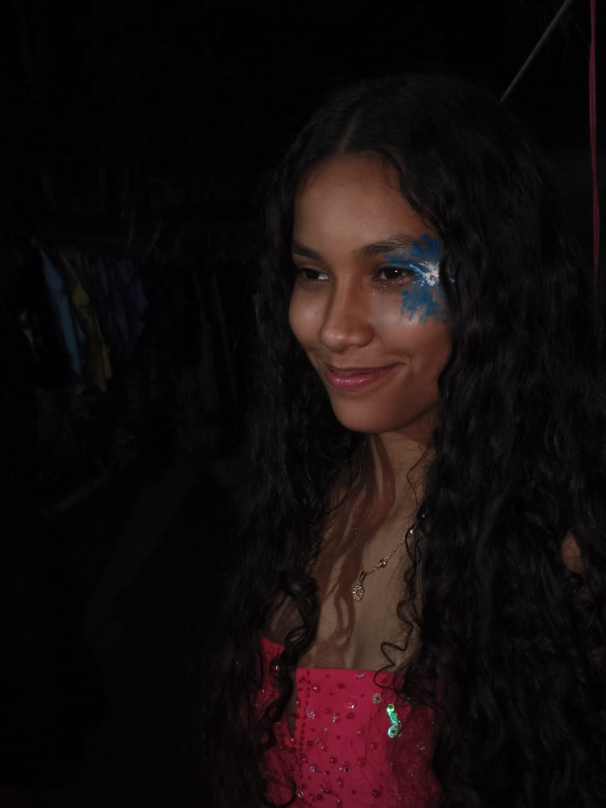

Minha jornada de aprendizado
Aqui apresentarei meus trabalhos escolares, atividades e projetos desenvolvidos ao longo da minha formação Front End.
Em construçãoDesenvolvimento Front-End

Estudante, sonhadora e sempre aprendendo.
Aqui você poderá conhecer um pouco sobre mim, acompanhar meus projetos e descobrir minha trajetória de aprendizado.
Olá! Meu nome é Pamela Vitória Dias e Dias. Sou estudante e estou construindo minha trajetória de aprendizado, descobertas e desenvolvimento pessoal.
Este espaço representa um pouco de quem sou, dos meus interesses e dos meus objetivos para o futuro.
Aqui apresentarei meus trabalhos escolares, atividades e projetos desenvolvidos ao longo da minha formação Front End.
Em construçãoAqui reunirei meus certificados de cursos, oficinas e outras atividades que contribuam para minha formação.